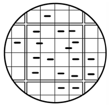
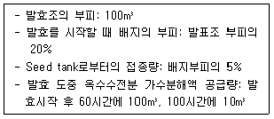
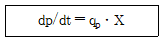
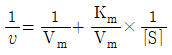
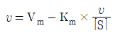
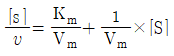
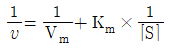
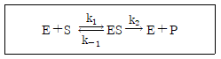
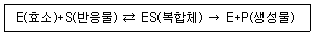
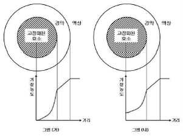

바이오화학제품제조기사 (2019-04-27 기출문제)
1과목: 미생물공학
1. 기본 분자구조와 그에 따른 유사한 효능에 따라 분류할 때, 현재 사용되고 있는 항생물질 그룹이 아닌 것은?
- Macrolide계
- β-lactam계
- tetracycline계
- lipopolysaccharide계
(정답률: 81%)

2. 젖산발효에 관여하지 않는 균주는?
- Lactobacillus 속
- Leuconostoc 속
- Pseudomonas 속
- Streptococcus 속
(정답률: 78%)
3. Escherichia coli와 Saccharomyces cerevisiae에서 모두 유지되는 shuttle vector를 만들고자 할 때, 이 shuttle vector가 두 미생물 내에서 유지되기 위해 반드시 포함되어야 하는 두 가지 유전자의 예로 옳은 것은?
- E. coli의 bla 와 S. cerevisiae의 URA3
- E. coli의 replication origin 과 S. cerevisiae의 replication origin
- E. coli의 Tetl 과 S. cerevisiae의 LEU2
- E. coli의 bla 와 S. cerevisiae의 EU2
(정답률: 86%)
4. 생물전환반응(bioconversion)에 의한 아미노산 생산 기술의 특성이 아닌 것은?
- 에너지 절약형임
- 반응 특이성이 높음
- 입체 특이성이 낮음
- 상온, 상압에서 반응함
(정답률: 78%)
5. 발효식품과 해당 발효에 관여하는 미생물의 연결이 옳지 않은 것은?
- Cheese – Aspergillus 속
- Yogurt – Streptococcus 속
- Wine – Saccharomyces 속
- Natto – Bacillus 속
(정답률: 80%)
6. Biotin의 조절을 필요로 하는 아미노산의 발효는?
- Serine 발효
- Glutamic acid 발효
- Histidine 발효
- Aspartic acid 발효
(정답률: 77%)
7. 미생물에 의해 생산되는 유기산과 생산균의 연결이 틀린 것은?
- Citric acid Candida lipolytica
- Kojic acid – Aspergillus oryzae
- Lactic acid – Lactobacillus delbrueckii
- Gluconic acid – Rhizopus oryzae
(정답률: 60%)
8. Steam injector를 사용한 증기살균법의 장점이 아닌 것은?
- 설비비가 싸다.
- 거품 발생이 거의 없다.
- 증기의 이용 효율이 높다.
- 고형물을 포함하는 배지의 살균에 유리하다.
(정답률: 66%)
9. 페니실린에 대한 설명으로 틀린 것은?
- 베타락탐계 항생제이다.
- 그람양성균의 세포벽 합성을 저해한다.
- 플레밍(A. Fleming)에 의해 발견된 세계 최초의 항생제이다.
- 주로 방선균으로부터 생산된다.
(정답률: 93%)
10. 혈구계수기(Hemocytometer)를 이용하여 용액속의 세균수를 측정한 결과 현미경 시야에서 그림과 같은 결과를 관찰할 수 있었다. 용액 1 ml 속에는 몇 개의 세균(cells/ml)이 있는가? (단, 혈구계수기에는 1mm×1mm의 면적을 25개의 큰 정사각형으로 나누고, 하나의 큰 정사각형으로 나누었으며, 슬라이드와 덮개 유리 사이의 간격은 0.1mm이다.)

- 12×103
- 12×104
- 3×105
- 3×106
(정답률: 60%)
11. Gluconobacter 를 이용하여 에탄올로부터 초산을 생산하고자 한다. 이 때 산화과정이 몇 번 일어나는가?
- 1번
- 2번
- 3번
- 4번
(정답률: 89%)
12. Tetracycline 발효를 fed-batch 방식으로 행하려 한다. 미강유 (rice bran oil) 는 발효 시작 후 30 시간부터 발효 종료시 까지 평균유속 0.3m3/h 의 속도로, 암모니아수는 발효 시작 후 20 시간부터 발효 종료시 까지 평균 유속 0.15m3/h 의 속도로 feed 한다. 배양액의 증발이 없다고 간주하고, 배양액이 발효조 부피의 80%가 될 때까지 발효할 수 있다면 배양시간은 얼마인가?

- 약 95시간
- 약 1⑤ 시간
- 약 113시간
- 약 125 시간
(정답률: 59%)
13. DNA 재조합에 사용되는 효소 중 두 개의 DNA조각을 연결하는데 사용되는 효소는?
- Polymerase
- Ligase
- Nuclease
- Topoisomerase
(정답률: 82%)
14. 우유처리 공정의 부산물인 whey에는 어떤당이 가장 많이 포함되어 있는가?
- 과당(fructose)
- 유당(lactose)
- 포도당(glucose)
- 전분(starch)
(정답률: 90%)
15. 미생물을 이용한 산업적 규모의 발효에서 질소원으로 쓰이는 것은?
- 당밀
- 전분
- Corn steep liquor
- Sulfite waste liquor
(정답률: 85%)
16. 효소와 그 생산 미생물의 연결이 틀린 것은?
- Invertase – Saccharomyces cerevisiae
- Cellulase – Trichoderma viride
- Lipase _ Cephaloporium acremonium
- Protease – Aspergillus oryzae
(정답률: 54%)
17. 미생물의 동결 보존 시 보호제로서 사용하지 않는 것은?
- Sucrose
- 혈청
- 탈지유
- 지방산
(정답률: 69%)
18. 세균의 종균 접종량은 일반적으로 배양액량 대비 몇 % 범위인가?
- 0.01 ~ 0.1
- 0.1 ~ 10
- 20 ~ 30
- 30 ~ 50
(정답률: 84%)
19. EMP(Embden-Meyerhof-Parnas) 대사경로를 가지고 있고 invertase를 분비하지만 amylase 분비 기능은 결핍된 미생물이 있다. 이 균주 배양 시 탄소원으로 사용될 수 없는 기질은?
- 자당(sucrose)
- 과당(fructose)
- 포도당(glucose)
- 가용성 전분(soluble starch)
(정답률: 83%)
20. 고정화 효소의 장점으로 틀린 것은?
- 효소의 장기간 사용
- 효소 성능의 획기적 증대
- 효소 활성의 안정성 유지
- 효소의 반복적 사용을 통한 경제성 제고
(정답률: 80%)
2과목: 배양공학
21. 아미노산 생산의 경우 발효 최종산물에 의해서 대사 경로상의 초기 효소의 활성이 저해를 받는 현상을 보이기도 한다. 이런 현상을 지칭하는 용어는?
- Catabolite repression
- Catabolite inhibition
- Feedback repression
- Feedback inhibition
(정답률: 85%)
22. 미생물의 필수적인 영양소와 거리가 먼 것은?
- 인
- 탄소
- 질소
- 티타늄
(정답률: 92%)
23. 산물생산속도는 아래와 같은 식으로 표현된다. 비산물생산속도(qp)와 비성장속도(specific growth rate)가 비례하는 경우는?

(단, p = 산물 농도, t = 시간, qp = 비산물생산속도, X = 세포농도)
- 산물의 생산이 세포 생장 정지기에 진행될 때
- 세포유지(cell maintenance) 에너지 수요가 많을 때
- 산물의 생산이 세포의 생장과 동시에 이루어질 때
- 산물이 세포가 완만하게 생장할 때나 정지기에 생산될 때
(정답률: 77%)
24. 세포 대사산물을 정량하여 간접적으로 세포 농도를 측정하는 방법에 관한 설명으로 가장 거리가 먼 것은?
- 세포 내의 대사산물의 함량이 변화가 없어야 한다.
- ATP의 함량은 일정하므로 간접법으로 이용할 수 있다.
- 단백질의 측정 시 배지에 단백질 함량이 있으면 그 값을 신뢰하지 못한다.
- RNA의 함량(RNA/세포무게)은 세포 내의 성장 과정 중 일정하므로 간접법으로 이용 가능하다.
(정답률: 81%)
25. 효소의 3차 구조에 영향을 미침으로써 미생물 생장 속도에 영향을 주는 인자는?
- 포도당 농도
- 수소이온 농도
- 용존산소 농도
- 산화환원 전위
(정답률: 88%)
26. 제한 배지를 제조할 때 사용할 수 있는 배지 성분은?
- 당밀
- 펩톤
- 포도당
- 효모추출물
(정답률: 72%)
27. 효모를 이용한 고가의 재조합 단백질을 생산할 때 세균(bacteria)에 의한 오염을 막기위해 사용할 수 있는 항생제로서 세포벽합성을 저해하는 것은?
- 니스타틴 (Nystatin)
- 페니실린 (Penicillin)
- 앰포테라이신 B (Amphotericin B)
- 싸이클로헥사마이드 (Cyclioheximide)
(정답률: 89%)
28. 식물세포의 배양특성이 아닌 것은?
- 세포가 덩어리화 되는 경향이 있다.
- 높은 장력(tensile strength)을 갖는다.
- 전단응력(Shear stress)에 민감하다.
- 세포의 배가시간(doubling time)이 수 시간에v달한다.
(정답률: 61%)
29. 곰팡이를 액체배양 할 때 균체량 정량법으로 가장 적당한 것은?
- 평판계수법
- 건조중량 측정법
- 광학밀도 측정법
- 헤모사이토미터(hemocytometer) 측정법
(정답률: 76%)
30. 효모(S. cerevisiae)를 재조합 단백질의 숙주세포로 사용할 때의 장점을 설명한 것으로 옳지 않은 것은?
- 효모는 병원성이 없으므로 대량생산 시비교적 안전하다.
- 효모는 에탄올을 생산하므로 재조합 단백질을 생산하는데 유리하다.
- 효모는 진핵생물이므로 진핵생물 유래의 외래단백질을 발현시키는데 유리하다.
- 발현된 단백질에 post-translational modification(PTM) 과정에서 당분자를 부착시키는 기능을 가지고 있다.
(정답률: 81%)
31. 재순환이 있는 키모스탯(chemostat)에서 공급액의 유량이 100 mL/h, 배양부피가 1000 mL일 때, 농축인자가 1.5이고 재순환비 가 0.6이라면 정상상태에 도달했을 때 세포의 비성장속도(h-1)는?
- 0.⑤
- 0.06
- 0.07
- 0.08
(정답률: 50%)
32. 산소소비속도(OUR)를 측정하여 유지계수(ms)를 무시하고 세포농도를 측정하고자 한다. 곰팡이 배양에서 측정된 산소소비속도가 0.393g O2/L×h이었고, 비성장속도 μ가 0.15 h-1이었으며 산소에 대한 기질수율 Yx/o2가 2.79 g/g 이었다면 세포농도 X(g/L)는?
- 7.31
- 7.52
- 7.72
- 7.92
(정답률: 54%)
33. 진핵세포 내 구성 성분 중에 단백질이나 지질의 합성이 이루어지는 장소는?
- 골지체
- 소포체
- 원형질막
- 미토콘드리아
(정답률: 74%)
34. 연속배양 시 배양기의 부피가 1200 mL이고 배양부피가 600 mL일 때 영양배지의 유량이 10 mL/min이면 희석속도(h-1)는?
- 1
- 2
- 60
- 120
(정답률: 57%)
35. 미생물의 대수성장기에 대한 설명으로 옳은 것은?
- 미생물의 성장 중 대수성장기에 최대 비성장속도를 갖는다.
- 동일한 미생물은 다른 배양조건에서도 동일한 비성장속도를 갖는다.
- 대수성장기에 있는 미생물 균체의 성장속도는 일정하다.
- 대수성장기에 있는 미생물의 목적산물 생산속도가 가장 높다.
(정답률: 80%)
36. 미생물 발효를 이용하여 생산하려는 목적 산물이 feedback inhibition으로 조절될 경우, 가장 타당성이 높은 해결방법은?
- Inhibitor에 내성을 보이는 효소를 가진 변이주를 선별한다.
- Inhibitor를 생산하는 효소가 결핍된 변이주를 선별한다.
- Inhibitor가 세포 내에 고농도로 축적되는 투과성 변이주를 선별한다.
- Inhibitor를 배양액에 첨가해 주어야만 자랄수 있는 변이주를 선별한다.
(정답률: 79%)
37. 2 개 이상의 발효조를 연결하여 연속적으로 사용할 때 얻을 수 있는 가장 큰 장점은?
- 기질의 소비 속도를 증가시킬 수 있다.
- 기질 소비에 대한 균체 생산량을 증가시킬 수 있다.
- 주어진 기질 농도에서 균체의 증식 속도를 증가시킬 수 있다.
- 균체 증식과 대사산물의 생산을 분리하여 조절할 수 있다.
(정답률: 75%)
38. 일반적으로 안전한 미생물로 알려진 미생물(GRAS list)이 아닌 것은?
- Bacillus subtilis
- Aspergillus oryzae
- Bacillus thuringinsis
- Saccharomyces cerevisiae
(정답률: 78%)
39. 생장과 관련된 대표적인 미량영양소에 해당하지 않는 것은?
- 비타민
- 호르몬
- 아미노산
- 포도당
(정답률: 81%)
40. 영양물질 흡수방법에 따른 미생물의 분류 중 옳지 않은 것은?
- Chemolithoautotroph : 유기물을 에너지원으로 사용하며 이산화탄소를 탄소원으로 사용하는 미생물
- Chemoorganoheterotroph : 유기물을 에너지원과 탄소원으로 사용하는 미생물
- Photoautotrophs : 광(光)원을 에너지원으로 사용하며 이산화탄소를 탄소원으로 사용하는 미생물
- Photoorganoheterotroph : 광(光)원을 에너지원으로 사용하며 유기물을 탄소원으로 사용하는 미생물
(정답률: 75%)
3과목: 생물반응공학
41. 생물 반응기의 계측 기구가 갖추어야 할 조건으로 가장 거리가 먼 것은?
- 정확성
- 내구성
- 안정성
- 투명성
(정답률: 89%)
42. 효소반응에서 최대 반응속도와 Michaelis-Menten 상수를 구하기 위한 식이 아닌 것은? (단, v는 반응속도, Vm는 최대반응속도, Km은 Michaelis-Menten 상수, [S]는 기질농도이다.)




(정답률: 64%)
43. 재조합 대장균의 고농도 배양을 통한 유용물질 생산에 가장 적합한 생물반응기는?
- 회분식 반응기
- 유가식 반응기
- 연속식 반응기
- 고정화 효소 칼럼 반응기
(정답률: 51%)
44. 효소 고정화에 관한 내용으로 옳은 것은?
- 효소고정화를 통하여 효소의 안정성을 높일 수 있다.
- 효소고정화에 쓰이는 담체는 물에 잘 용해되어야 한다.
- 연차적 반응을 일으키는 둘 이상의 효소를 고정화시켜 사용하면, 오히려 반응이 저해되는 단점이 나타나므로 효소고정화는 단일 효소에만 사용한다.
- 흡착 방법은 효소고정화 방법 중 가장 간단하면서도 효소와 담체간 결합이 가장 강하여 많이 사용되고 있다.
(정답률: 73%)
45. 표면에 음이온기를 가지고 있는 고체 입자에 pH가 8일 때 반응속도가 최대인 효소를 흡착 시켰을 때 효소반응속도가 최대가 되기 위한 반응용액의 pH는?
- 8
- 8 보다 크다.
- 8 보다 작다.
- 기질의 농도에 따라서 변한다.
(정답률: 70%)
46. 효소반응이 Michaelis-Menten 속도식을 따를 때, 반응속도에 대한 기질농도의 영향에 대한 설명으로 가장 적합한 것은?
- 기질농도가 증가하며 반응속도가 계속 증가한다.
- 기질농도가 증가하면 반응속도가 계속 감소한다.
- 기질농도와 무관하게 반응속도는 계속 증가한다.
- 기질농도가 증가함에 따라 반응속도가 증가하지만 어느 한계값 이상에서는 기질농도에 관계없이 일정하다.
(정답률: 88%)
47. 효소(E)가 기질(S)과 반응하여 효소기질화합물(ES)을 생성하고 생성물(P)을 생성하는 반응은 다음과 같다. 이 때 최대반응속도(Vmax)의 값은? (단, k1,k2,k-1은 각각 속도상수를 나타낸다.)

- k2[E]
- k2[ES]
- k2[E+ES]
- (k-1+k2)/k1
(정답률: 64%)
48. 세포생장이 Monod식을 따르는 미생물이 유가식 방법으로 배양되고 있다. 초기 액상부피가 1 L인 상태에서 100 g/L의 포도당을 시간당 0.2 L로 주입하였더니, 5 시간만에 준정상상태(quasi-steady state)에 도달하였다. 이 때, 반응기 내에서 포도당의 농도(g/L)는? (단, 미생물의 최대 비성장속도는 0.3 h-1, 포도당에 대한 기질 포화상수는 2 g/L이다.)
- 1
- 5
- 10
- 20
(정답률: 30%)
49. 연속살균법이 회분살균법보다 유리한 점이 아닌 것은?
- 자동화가 용이하다.
- 규모의 확대가 용이하다.
- 배지의 품질에 손상이 덜 간다.
- 고형물을 다량 포함한 배지도 살균할 수 있다.
(정답률: 73%)
50. 반응기 형태 중 산소전달 면에서 가장 효율이 낮은 형태는?
- 충전식(packed bed)
- 공기부양식(air lift)
- 교반식(stirred vessel)
- 기포탑(bubble column)
(정답률: 65%)
51. 효소반응을 다음의 Briggs-Haldane식 (유사정상상태식)으로 나타낼 수 있다고 가정할 때 반응시간에 따른 농도의 변화가 가장 적은 것은?

- 반응물
- 생성물
- 효소활성 저해물
- 효소와 반응물의 복합체
(정답률: 76%)
52. 빠른 평형을 가정한 효소반응에서 최대반응속도 Vm에 영향을 주는 요인으로 가장 거리가 먼 것은?
- 반응온도
- 효소농도
- 생성물 농도
- 활성제 농도
(정답률: 67%)
53. kL·a가 15 h-1인 발효기에서 10 m mole O / gdry weight · h의 qo2를 갖는 대장균을 배양할 때 호기성 조건하에서 자랄 수 있는 최대 대장균 농도(g/L)는 얼마인가? (단, 임계 용존산소 농도는 0.2 mg/L, 30℃에서 발효액 내 공기의 산소 용해율은 7.3 mg/L이다.)
- 0.33
- 0.67
- 1.34
- 6.54
(정답률: 43%)
54. 액중 발효(submerged fermentation)와 비교할 때, 고상 발효(solid-state fermentation)의 특징으로 옳지 않은 것은?
- 배지제조 비용이 낮고, 반응기가 간단하여 시설비를 절감할 수 있다.
- 배지의 수분 함량이 낮아 오염 가능성이 적다.
- 생성물의 분리가 용이하지 않지만 에너지의 효율성이 있다.
- 교반이 잘되지 않아서 배지가 불균일하다.
(정답률: 67%)
55. 균일하고 작은 구멍이 있는 막이 구멍보다 큰 반지름을 갖는 입자를 통과시키지 않는 효과를 이용하여 기체를 멸균하는 것은?
- 증기멸균기
- 흡착멸균기
- 표면여과기
- 크로마토그래피멸균기
(정답률: 79%)
56. 생물반응기에서 산소농도 측정 시 산소전극의 응답시간(response time)이 문제가 될 수 있다. 측정하려는 kL·a와 전극의 응답에 대한 시간상수 값 중 큰 오차 없이 잴 수 있는 경우는?
- 0.1 sec-1, 1 sec-1
- 0.1 sec-1, 0.1 sec-1
- 10 sec-1, 1 sec-1
- 100 sec-1, 10 sec-1
(정답률: 67%)
57. 효소 고정화를 위한 담체의 재질 중 고정화 형태가 다른 것은?(오류 신고가 접수된 문제입니다. 반드시 정답과 해설을 확인하시기 바랍니다.)
- Ca-alginate
- Activated carbon
- Iodoacetyl cellulose
- CNBr-activated sephadex
(정답률: 46%)
58. 발효기를 대규모화 할 때 발효기의 높이에 대한 지름의 비가 일정하게 유지된다면, 부피에 대한 표면적의 비는 어떻게 변화하는가?
- 감소한다.
- 증가한다.
- 일정하다.
- 감소하다가 증가한다.
(정답률: 71%)
59. 미생물을 이용한 생물공정에 관한 설명 중 틀린 것은?
- 배지의 산화환원 전위는 질소를 통과시켜 높일 수 있다.
- 용존산소 농도에 의한 생장제한을 극복하기 위해 높은 압력(2~3 atm)하에서 운전하는 것이 있다.
- 아황산염 방법에 의하여 부피전달계수 kL·a를 결정할 때, 황산염의 생성속도는 산소소모속도에 비례한다.
- 발효배지의 이온세기는 특정영양소의 세포내·외 로의 전달, 세포의 대사 기능에 영향을 미친다.
(정답률: 62%)
60. 그림 (가)와 (나)는 액상에 녹아있는 기질이 경막을 통해 효소가 고정화 되어있는 구형담체 내부에 전달되면서 나타내는 기질농도를 거리에 따라 도해한 것이다. 다음 설명 중 옳지 않은 것은?

- (가),(나) 모두 경막이 외부물질전달에 대한 저항으로 작용한다.
- (가),(나) 모두 담체내부에 확산저항이 존재한다.
- (가)는 (나)에 비해, 효소의 반응속도가 확산속도보다 느리다.
- (가),(나) 모두 효소의 반응속도는 외부물질 확산속도에 제한을 받는다.
(정답률: 81%)
4과목: 생물분리공학
61. 단백질 침전을 가장 잘 유도하는 음이온은?
- OH-
- SO42-
- Cl-
- NO3-
(정답률: 82%)
62. 빠른 속도로 여과를 하고자 할 때 적합한 방법이 아닌 것은?
- 응집제를 첨가한다.
- 여과 면적을 크게 한다.
- 여과 보조제를 첨가한다.
- 여과포를 여러 장 포개서 쓴다.
(정답률: 86%)
63. 발효 중 생성되는 물질로서 동일한 농도에서 세포의 생장에 미치는 독성이 가장 큰 것은?
- 에탄올
- 부탄올
- 아세톤
- 아미노산
(정답률: 79%)
64. 0.25 M NH4Cl 수용액의 pH는 얼마인가? (단, 암모니아의 Kb = 1.75×10-5이다.)
- 4.35
- 4.56
- 4.78
- 4.92
(정답률: 33%)
65. 효모나 대장균에 존재하는 효소를 분리 정제할 때, 가장 널리 이용하는 용액의 pH는?
- 1 ~ 2
- 3 ~ 5
- 6 ~ 8
- 9 ~ 11
(정답률: 83%)
66. 1 단 추출공정에서 공급액내의 용질 농도가 낮을 경우 순수한 용매를 사용했을 때 추출물 중의 용질 농도는? (단, 분배계수(K)= 32, 추출물과 추출잔류물 질량비 (E/R) = 30/500, 용질 질량분율(XF) = 4.4×10-4)
- 4.4×10-1
- 4.4×10-2
- 4.4×10-3
- 4.4×10-4
(정답률: 42%)
67. Van Deemter 식은 다음 중 어떤 변수의 관계를 나타낸 식인가?
- 단 높이와 유속과의 관계
- 단의 수와 유량과의 관계
- 포화도와 유속과의 관계
- 분배계수와 포화도의 관계
(정답률: 67%)
68. 항원-항체의 결합에 의해 일어나는 흡착은?
- 다단 흡착
- 재래식 흡착
- 친화성 흡착
- 이온교환 흡착
(정답률: 88%)
69. 추출공정에서 분배계수 K > 1 인 조건은? (단, L 은 가벼운 비극성용매이고, H는 무거운 극성 용매이며, μ0는 표준상태의 화학포텐셜이다.)
- μ0(H) > μ0(L)
- μ0(H) = μ0(L)
- μ0(H) < μ0(L)
- μ0(H) = ∞
(정답률: 74%)
70. 액체에 용해되어 있는 항생물질, 효소 등과 같이 특히 열에 불안정한 물질의 건조에 대해 사용하는 건조법은?
- 동결건조법
- 고주파건조법
- 유동층건조법
- 적외선 복사건조법
(정답률: 83%)
71. 침전 공정 후 단백질을 분리하는 것과 같은 기술로서 생물 분리에 주로 사용되고 있는 분리기술은?
- 증발
- 증류
- 흡수
- 막분리
(정답률: 87%)
72. 역삼투의 원리를 가장 효율적으로 이용할 수 있는 생물공학 산업 분야는 어느 것인가?
- 당(sugar)류 제품의 탈수
- 식품가공, 유제품 가공 등 분야에서의 멸균
- 유제품 가공 분야에서의 단백질 회수 및 정제
- 발효액으로부터 생산된 재조합 단백질의 회수 및 정제
(정답률: 84%)
73. 발효 최종산물이 수용액 상태일 때, 회수정제 공정 중 대부분의 수분을 제거하기에 가장 적합한 시기는?
- 가장 초기 단계
- 결정화 단계 전
- 농출 공정 완료 후 다음 단계
- 최종 단계인 건조 공정 직전
(정답률: 78%)
74. 생성물 용액이 분사구를 통해 가열된 용기로 분무되는 건조기는?
- Spray dryer
- Freeze dryer
- Rotary-drum dryer
- Vacuum tray dryer
(정답률: 86%)
75. 비극성(소수성)을 나타내는 아미노산이 아닌 것은?
- 라이신(lysine)
- 류신(leucine)
- 트립토판(tryptophan)
- 페닐알라닌(phyenylalanine)
(정답률: 70%)
76. 당단백질의 당쇄(carbohydrate)와 친화성을 갖는 물질은?
- 폴리에틸렌글리콜(polyethylene glycol)
- 덱스트란(dextrin)
- 렉틴(lectin)
- 사이클로덱스트린(cyclodextrin)
(정답률: 57%)
77. 다음은 분리 정제 공정과 산물의 분리 정제 기준이 되는 특성을 연결한 것이다. 잘못 짝지어진 것은?
- 투석 – 확산
- 역삼투 – 질량
- 한외여과 – 크기
- 용매 추출 - 용해도
(정답률: 81%)
78. A는 입자의 전하, B는 입자의 지름, C는 유체의 점도라고 할 때 전기영동 시 전기장 내에서의 입자의 종단속도에 영향을 미치는 인자를 모두 나타낸 것은?
- A
- A, B
- A, C
- A, B, C
(정답률: 80%)
79. 생성물이 세포 내에 있는 경우 반드시 필요한 공정은?
- 여과
- 염석
- 원심분리
- 세포파쇄
(정답률: 86%)
80. 전기 투석 장치를 사용할 수 없는 공정은?
- 세포파쇄
- 이온치환
- 전기분해
- 염의 농축과 희석
(정답률: 69%)
5과목: 생물공학개론
81. 멸균 공정에 있어서 주어진 온도에서 살아있는 세포나 포자의 수를 윈래 숫자의 10%로 줄이는데 필요한 시간을 나타내는 것은?
- L value
- Z value
- F0 value
- D value
(정답률: 80%)
82. 아미노산과 같은 약산을 강염기로 적정할 때의 적정 곡선에 대한 설명으로 틀린 것은?
- pH가 점점 증가한다.
- pK 값 근처에서는 pH 변화가 작다.
- 짝염기의 농도는 항상 일정하게 유지된다.
- pH가 pK 보다 작을 때는 산의 농도가 짝염기의 농도 보다 높다.
(정답률: 71%)
83. 진핵세포 기관 중 지질을 합성하고, 간세포에서 탄수화물 대사, 해독작용, 칼슘이온 저장의 기능을 하는 세포 소기관은?
- 리보솜
- 조면 소포체
- 골지체
- 활면 소포체
(정답률: 66%)
84. 생식 세포의 염색체 속에 들어 있는 것으로 DNA로 구성된 기본 단위를 무엇이라고 하는가?
- 유전자
- 미토콘드리아
- 핵
- 리보솜
(정답률: 86%)
85. 미생물의 생장과 대사산물 생성과의 관계에 대한 설명으로 틀린 것은?
- 혼합 성장 관련 산물 생성은 완만한 성장기 또는 정지기에 일어난다.
- 젖산은 혼합 성장 관련 산물의 예이고, 페니실린은 비성장 관련 산물의 예이다.
- 성장 관련 산물은 미생물의 생장과 동시에 생산된다.
- 비성장 관련 산물의 생성은 생장 속도가 0인 정지기 동안 진행되고 비생산속도는 세포의 비성장속도에 비례한다.
(정답률: 64%)
86. 중합효소 연쇄반응(Polymerase Chain Reaction, PCR)에 사용하는 효소는?
- Telomerase
- Taq polymerase
- RNA polymerase
- Cre recombinase
(정답률: 85%)
87. PCR을 이용한 유전자 복제 사이클이 2 분 이라면, 하나의 DNA 조각을 18 분 동안 복제하면 몇 개의 조각이 되겠는가?
- 128
- 256
- 512
- 1024
(정답률: 85%)
88. 세포막을 통한 작은 분자들의 수송 기작에서 에너지에 의존하지 않는 기작으로만 짝지어진 것은?
- 수동확산, 능동수송
- 수동확산, 촉진확산
- 촉진확산, 능동수송
- 촉진확산, 집단전이
(정답률: 76%)
89. 단백질 번역 과정에서 종결 코돈이 아닌 것은?
- UGG
- UGA
- UAA
- UAG
(정답률: 80%)
90. 동물 세포를 용질의 농도가 세포보다 낮은 저장액에 담그면 동물 세포는 어떻게 되는가?
- 터진다.
- 분열한다.
- 변화없다.
- 쪼그라든다.
(정답률: 87%)
91. 살모넬라균과 이질균만을 선택적으로 배양하는 SS 한천배지를 가리키는 용어는?
- 선택배지
- 제한배지
- 최소배지
- 액체배지
(정답률: 83%)
92. 세포 내에서 발견되는 염색체와는 별개인 DNA분자로서 독립적인 복제 능력을 가지는 유전인자들의 집합체는?
- 엑손(exon)
- 오페론(operon)
- 인트론(intron)
- 플라스미드(plasmid)
(정답률: 87%)
93. 대기압에 대한 설명으로 옳은 것은?
- 게이지로 측정한 압력
- 게이지압과 대기압의 곱
- 게이지압과 대기압의 합
- 게이지압과 절대압의 차
(정답률: 75%)
94. Pentose-phosphate 경로의 주요 역할은?
- 생합성을 위한 NADPH를 제공한다.
- 무산소 호흡을 위해 중요한 역할을 한다.
- 산소에 전자를 전달하여 ATP를 생산한다.
- 대사를 위해 acetyl-CoA 제거 역할을 한다.
(정답률: 75%)
95. 전기영동으로 RNA를 분리하는 방법 중 하나인 Glyoxal/DMSO 방법에 대한 설명으로 틀린 것은?
- DMSO는 수소결합을 방해하는 역할을 한다.
- 전기영동을 하는 동안 완충용액의 pH 값이 일정하다.
- Glyoxal 은 guanine과 공유 결합하여 G-C 염기쌍을 방지한다.
- Formaldehyde를 이용하는 방법에 비해 running이 느린 단점이 있다.
(정답률: 65%)
96. 분자생물학 실험에서 사용되는 전기영동(electrophoresis)에 대한 설명 중 틀린 것은?
- 이동거리는 분자량에 비례하여 증가한다.
- 크기가 작은 분자일수록 더 쉽게 이동한다.
- 이동거리는 분자량이 감소할수록 증가한다.
- DNA의 겔 전기영동을 위한 실험의 경우 전기장에서 음전하를 띤 DNA 분자가 agarose를 통하여 이동한다.
(정답률: 87%)
97. 분열 중인 세포는 100 개의 복제를 만들 만큼 충분한 DNA를 가지고 있으며 플라스미드 DNA는 절반이 이량체로 존재하고 20%가 사량체로 존재할 때 플라스미드 불포함 세포가존재할 확률은?
- 2(1-40)
- 2(1-50)
- 2(1-60)
- 2(1-70)
(정답률: 58%)
98. 효소가 반응을 촉진시키기 위하여 주로 하는 역할은?
- 효소는 자유 에너지에 영향을 끼친다.
- 효소는 반응의 평형상수에 영향을 끼친다.
- 효소는 활성화 에너지(activation energy)를 높이는 역할을 한다.
- 효소는 활성화 에너지(activation energy)를 낮추는 역할을 한다.
(정답률: 84%)
99. 축합반응에 의하여 4개 분자의 포도당으로부터 만들어진 올리고당의 분자량은? (단, 포도당의 분자량은 180이다.)
- 666
- 684
- 702
- 720
(정답률: 78%)
100. 빛 에너지를 화학에너지로 전환시키는 세포내소기관은?
- 엽록체
- 미토콘드리아
- 엽록소
- 리소좀
(정답률: 85%)